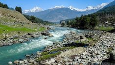
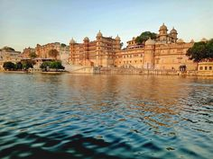
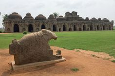

LIFE UNSCRIPTED |~AAKANSHA
Welcome to the life unscripted, a cozy corner of the internet where I share the moments,musings,and adventures that make up my journey through life.I'm Aakansha, a curious wanderer and I'm thrilled to have you here. Whether I'm exploring new places, experimenting with news, or simply reflecting on the little things that bring joy, this blog is my canvas for creativity and connection. Join me as I navigate the highs and lows, the ordinary and extraordinary, and everything in between. Let's embark on this journey together, one story at a time.
The Face Behind the Words
Hi there! I'm Aakansha, who love to uncover the hidden gems, and avid explorer of life's little wonders. When I'm not behind my camera lens capturing moments, then you can find me experimenting with new recipes in the kitchen. This blog is my space to share my adventures, thoughts, and creations with you. I believe in the beauty of everyday moments and the joy of discovering new perspectives.
It is where I blend my love for travel and food into one exciting adventure. Join me as I explore new destinations and share tips and stories to inspire your own journeys and meals.
ECHOES AND STORIES
ECHO FROM THE TOP-Lidder River Palgham, Kashmir
STORY BEHIND IT~
The Lidder or Liddar (Kashmiri: لیٔدٕر, IPA: /lʲədɨr/, Urdu: لدر, romanized: liddar, Sanskrit: लम्बोदरी, romanized: Lambodarī) is a 73 km (45 mi) river situated in the Kashmir Valley of Jammu and Kashmir, India. It originates from the Kolahoi Glacier and feeds the Jhelum River in Mirgund Khanabal, at an altitude of 1,615 metres (5,299 ft).

UNSCRIPTED EXPERIENCE
The feel I have about the serene waters and lush surroundings offered a perfect escape from the hustle and bustle of everyday life. I enjoyed a peaceful stroll along the riverbanks, taking in the calming sounds of flowing water and the vibrant natural scenery. The area was perfect for a leisurely picnic, with plenty of spots to relax and soak in the beauty. Whether it was the gentle ripple of the water or the stunning sunset views, every moment by the river was a reminder of nature's tranquil charm. It was a delightful retreat, and I left feeling refreshed and inspired.
STORY FROM BOTTOM-Munnar Town, Kerala
STORY BEHIND IT~
Munnar (IPA: [mu:n̪:ɐ:r]) is a town and hill station located in the Idukki district of the southwestern Indian state of Kerala. Munnar is situated at around 1,600 metres (5,200 ft) above mean sea level, in the Western Ghats mountain range. Munnar is also called the "Kashmir of South India" and is a popular honeymoon destination.

UNSCRIPTED EXPERIENCE
The tea plantation in Munnar visit was a truly enchanting experience. Set amidst the verdant hills of this picturesque town, the plantation offered stunning views of rolling tea gardens that seemed to stretch endlessly. Wandering through the vibrant green fields, I marveled at the meticulous care put into growing the tea leaves. I had the chance to learn about the traditional tea-picking process and the history of tea cultivation in the region. The crisp, fresh air and the serene landscape provided the perfect backdrop for a peaceful exploration. Sampling a cup of locally grown tea was a highlight, allowing me to savor the rich flavors right where they were harvested. Munnar's tea plantations offered a refreshing escape into nature and a deep dive into the region's tea culture.
A GLIMPSE OF WEST INDIA- Pichola Lake,Udaipur
STORY BEHIND IT~
Lake Pichola, situated in Udaipur city in the Indian state of Rajasthan, is an artificial fresh water lake, created in the year 1362, named after the nearby Picholi village.It is one of the several contiguous lakes, and developed over the last few centuries in and around the famous Udaipur city. The lakes around Udaipur were primarily created by building dams to meet the drinking water and irrigation needs of the city and its neighbourhood. Two islands, Jag Niwas and Jag Mandir are located within Pichola Lake, and have been developed with several palaces to provide views of the lake.

UNSCRIPTED EXPERIENCE
It was a serene and captivating experience. This picturesque lake, nestled in the heart of the city, offers stunning views of the surrounding palaces and hills. I enjoyed a peaceful boat ride on the lake, gliding past the majestic Lake Palace and the beautiful Jag Mandir, each reflecting gracefully in the calm waters. The gentle breeze and the sight of the sun setting over the lake created a magical atmosphere. Strolling along the lake's edge, I took in the vibrant local life and the scenic beauty that defines Udaipur. Pichola Lake's tranquil charm and historical allure made for a memorable visit, offering a perfect blend of relaxation and cultural enrichment.
THE ECHOES OF FLORY- Hampi, Karnatka
STORY BEHIND IT~
Hampi or Hampe (Kannada: [hɐmpe]), also referred to as the Group of Monuments at Hampi, is a UNESCO World Heritage Site located in Hampi (City), Ballari district now Vijayanagara district, east-central Karnataka, India. Hampi predates the Vijayanagara Empire; it is mentioned in the Ramayana and the Puranas of Hinduism as Pampa Devi Tirtha Kshetra. Hampi continues as a religious centre, with the Virupaksha Temple, an active Adi Shankara-linked monastery and various monuments belonging to the old city.

UNSCRIPTED EXPERIENCE
It was like stepping back in time to a world of ancient grandeur and breathtaking landscapes. The historic ruins of this UNESCO World Heritage site, once the heart of the Vijayanagara Empire, offered a fascinating glimpse into a bygone era. Wandering through the impressive remnants of temples, palaces, and market streets, I marveled at the intricate architecture and the rich history that each structure holds. The iconic Stone Chariot and the majestic Virupaksha Temple were standout highlights, showcasing the artistry and engineering prowess of the time. Surrounded by dramatic boulder-strewn hills and lush greenery, Hampi's unique landscape added to the charm of the experience. The blend of history, culture, and natural beauty made my visit to Hampi an unforgettable adventure.